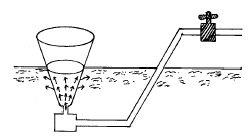
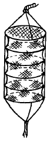
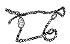

수산양식기능사 (2004-04-04 기출문제)
1과목: 수산양식
1. 굴의 단련 종패 설명 중 적당치 못한 것은?
- 채묘 후 2∼3개월 지난 것을 성장 억제시킨다.
- 노출시간이 4∼5시간 정도 되는 곳에 채묘상을 설치하여 관리한다.
- 가을부터 이듬해 봄까지 관리한다.
- 채묘후 성장이 잘되도록 뗏목 시설에서 관리한다.
(정답률: 67%)

2. 굴양식에서 따개비의 부착 피해가 없도록 부착을 방지하려면 어느 때 가장 주의를 해야 하는가?
- 양성 과정에서
- 채묘시기
- 단련시기
- 양식장에 수하할 시기
(정답률: 82%)
3. 피조개 양성장으로 가장 적당한 장소는?
- 조류소통이 잘되며 저질이 사질인 곳.
- 수심이 깊고 조류가 빠른 곳.
- 해수 유통이 잘되는 사니질인 곳.
- 해적생물과 먹이생물이 많은 곳.
(정답률: 85%)
4. 미역의 종묘 배양관리를 할 때 가이식을 하는 직접적인 목적은?
- 병해방지
- 생산량 증가
- 아포체의 성장촉진
- 물갈이의 효과증가
(정답률: 71%)
5. 다음 중에서 전 작업을 가장 손쉽게 할수 있고 밀식의 염려가 거의 없는 미역양식법은?
- 수평외줄식
- 수평쌍줄식
- 수평그물식
- 외줄쌍줄식
(정답률: 80%)
6. 보리새우 종묘를 양성장에 방양하기전 그물 구획양성을 하였다가 방양하는 근본적인 이유는?
- 도피방지
- 섭이 훈련
- 공식방지
- 양성장의 환경적응
(정답률: 72%)
7. 잉어의 채란을 위한 친어관리 요령을 옳게 설명한 것은?
- 산란지에 넣을 친어는 암컷의 수를 많게 한다.
- 산란용 친어에게 주는 사료는 가능한 단백질과 지방분을 많게 한다.
- 산란용 잉어는 봄 3, 4월경 부터 암수를 분리하여 수용한다.
- 친어의 나이는 수컷이 10년,암컷은 4∼5년 짜리로 택한다.
(정답률: 69%)
8. 어류도피를 막기 위한 철망장치를 하지 않아도 될 곳은?
- 주수구
- 물넘기
- 옆물길
- 배수구
(정답률: 84%)
9. 사료 중에서 특수영양 H인자가 들어있지 않는 것은?
- 어란
- 달걀
- 곤충
- 어분
(정답률: 75%)
10. 그림과 같은 부화기를 무슨 식이라고 하는가?

- 유통식
- 침지식
- 폐쇄식
- 습식
(정답률: 71%)
11. 잉어나 붕어의 친어 어획시 사용에 편리한 어구는?
- 깔그물류
- 채그물류
- 걸그물류
- 들그물류
(정답률: 84%)
12. 새꼬막 채묘기로 적당한 망지는?
- 3합사 32∼35절 정도
- 9합사 20∼25절 정도
- 15합사 10∼13절 정도
- 20합사 8∼10절 정도
(정답률: 77%)
13. 아래 그림과 같은 양성기로 양식하기에 적합한 것은?

- 진주담치
- 피조개
- 가리비
- 굴
(정답률: 87%)
14. 렙토세팔루스(leptocephalus)란?
- 뱀장어 유생의 이름이다.
- 뱀장어 유생이 즐겨먹는 먹이생물의 이름이다.
- 외양에 살고 있는 열대성 어류의 일종이다.
- 외양에서 하천으로 올라오는 연어 치어의 이름이다.
(정답률: 78%)
15. 대하 발생의 유생기가 아닌 사항은?
- 노플리우스
- 조에아
- 메갈로파
- 미시스
(정답률: 89%)
16. 우리나라에서의 미꾸라지 산란기의 설명이 가장 적당한 것은?
- 산란기는 3월 중순이며 바다에서 한다
- 산란기는 4월 중순이며 강의 하구로 가서한다
- 산란기는 6월 경이며 비가 오고 난뒤 맑은 날이다
- 산란기는 8월이며 바람부는 날이다
(정답률: 70%)
17. 몸은 난형이고, 유생은 올챙이에 가까운 모양을 하고 이 시기에 꼬리에 척색을 가지는 것은?
- 해삼
- 성게
- 주꾸미
- 우렁쉥이
(정답률: 84%)
18. 9월경 수온이 24℃ 이하일 때 김발에 붙는 김포자는?
- 과포자
- 중성포자
- 사상체
- 각포자
(정답률: 72%)
19. 김의 사상체 배양 중 한여름의 최고 수온 때 밝기는?
- 2000럭스 이상
- 1500럭스 이상
- 1000럭스 정도
- 500럭스 이하
(정답률: 77%)
20. 담수 어류의 산란 촉진제로 가장 잘 쓰이는 것은?
- 링거액
- 비타민 C
- 뇌하수체
- 알코올
(정답률: 85%)
2과목: 수산생물
21. 해양에서 가장 부족되기 쉬운 영양염은?
- 질산염
- 인산염
- 규산염
- 칼륨염
(정답률: 50%)
22. 대륙붕은 연안에서 수심 몇 m 정도까지를 말하는가?
- 연안에서 20m
- 연안에서 200m
- 연안에서 150m
- 연안에서 250m
(정답률: 80%)
23. 식물성 플랑크톤의 생태를 바르게 설명한 것은?
- 연안성은 영양염이 많고 염분이 높은 해역에 적응한다.
- 몸이 점액이나 한천질에 쌓여 있어 비중이 무겁다.
- 돌기가 있어서 몸의 표면적을 작게 하여 물과의 마찰이 적어 쉽게 가라앉는다.
- 엽록소를 가지고 광합성을 하므로 수계에 있어 중요한 생산의 근원이 된다.
(정답률: 90%)
24. 대부분의 물고기는 비늘에 덮여 있다. 비늘이 없는 물고기는?
- 뱀장어
- 가자미
- 상어
- 먹장어
(정답률: 67%)
25. 우리나라 대구 주 산란 장소는 어디인가?
- 전남 완도
- 동해 영일만
- 전북 곰소만
- 충남 아산만
(정답률: 79%)
26. 목구멍 속에 이(Teeth)를 가진 종류는?
- 잉어
- 송어
- 먹장어
- 상어
(정답률: 78%)
27. 우렁쉥이류에 대하여 설명한 것이다. 옳지 못한 것은?
- 유성생식으로 증식하며 암수한몸이다.
- 유생시는 올챙이모양이며 꼬리에 척색이 나타난다.
- 척색은 성체가 되어도 있으며 꼬리는 빨판으로 변화한다.
- 체표는 셀룰로오스 성분의 껍질로 싸여있다.
(정답률: 74%)
28. 갑각류의 형태가 아닌 것은?
- 분류상 가장 중요한 특징은 Mysis 기에 나타난다.
- 꼬리를 제외한 각체절에는 1쌍의 부속지가 있다.
- 소화관은 전장, 중장, 후장으로 나누어진다.
- 발생과정중 반드시 Nauplius기를 경과한다.
(정답률: 65%)
29. 체벽에 석회질로 된 골판 또는 뼛조각이 있고 가시를 갖고 있는 동물은?
- 연체동물
- 극피동물
- 절지동물
- 윤형동물
(정답률: 82%)
30. 서식장소가 비슷한 것끼리 짝지어진 것은?
- 바지락 - 대합
- 대합 - 참굴
- 바지락 - 가리비
- 가리비 - 참굴
(정답률: 59%)
31. 아래 그림과 같은 남조 식물은?

- 아나베나
- 짐뇨디늄
- 트리코레스뮴
- 미크로시스티스
(정답률: 71%)
32. 다음중 세대교번을 하지 않는 종류는?
- 파래
- 청각
- 미역
- 다시마
(정답률: 71%)
33. 우리나라에서 대황이 가장 많이 나는 곳은?
- 제주도
- 백령도
- 남해안
- 울릉도
(정답률: 77%)
34. 공기중에서 견디는 힘이 커서 조간대의 가장 위쪽에 붙어사는 수산식물은?
- 톳
- 바위수염
- 지충이
- 불등가사리
(정답률: 77%)
35. 어류의 체장 측정에서,입끝에서 등뼈가 끝나는 기점까지의 길이는?
- 전장
- 피린체장
- 표준체장
- 골체장
(정답률: 84%)
36. 다음중 기적병과 같이 몸 표면이 적색으로 변하는 증상을 나타내는 질병은?
- 백점병
- 트리코디나병
- 비브리오병
- 피부믹시듐병
(정답률: 67%)
37. 뱀장어에 백운병이 가장 심하게 나타나는 시기는?
- 초봄
- 초여름
- 초가을
- 초겨울
(정답률: 72%)
38. 수생균병에 대한 설명이 옳은 것은?
- 건강한 어체에도 기생한다.
- 수온이 상승하면 자연 치유될 때가 많다.
- 기생충 등 2차 발병의 원인이 된다.
- 송어 등 냉수성 어류에는 발병이 거의 없다.
(정답률: 67%)
39. 닻벌레의 기생으로 피해가 가장 큰 기생 부위는?
- 비늘밑에 기생
- 구강내 기생
- 머리에 기생
- 지느러미에 기생
(정답률: 53%)
40. 피부 흡충증을 옳게 설명한 것은?
- 난태생이다.
- 숙주를 떠나 활발히 유영한다.
- 어류가 서로 접촉할 때 감염된다.
- 중앙에 3개의 낫모양의 갈고리가 있다.
(정답률: 72%)
3과목: 양식장 수질관리 및 양식생물 질병
41. 성충구제가 가장 어러운 기생충은?
- 닻벌레
- 물이
- 트리코디나충
- 아가미흡충
(정답률: 65%)
42. 점액이 과잉 분비되고 후에는 표피가 벗겨지며 원충이 표피조직내를 이동하기 때문에 그 자극으로 병어는 몸을 양어지벽에 문지르는 증상이 나타나는 병은?
- 물이증
- 구두충증
- 믹소볼루스병
- 백점병
(정답률: 67%)
43. 반트호프( Van't Hoff)의 Q의 법칙이란?
- 온도 10℃ 상승하면 호흡량이 1∼2배로 증가한다.
- 온도 10℃ 상승하면 호흡량이 2∼3배로 증가한다.
- 온도 10℃ 상승하면 호흡량이 3∼4배로 증가한다.
- 온도 10℃ 상승하면 호흡량이 4∼5배로 증가한다.
(정답률: 74%)
44. Vitamine C 의 결핍으로 무지개 송어에 나타나는 주된 결핍 증상은?
- 안구돌출
- 간의 위축
- 지느러미 응혈
- 척추만곡증
(정답률: 57%)
45. 아래의 물고기의 행동중 정상어라고 판단되는 것은?
- 수면에 뛰어 오르거나, 양어지 벽에 비벼댄다.
- 주수구에 힘없이 헤엄쳐 다닌다.
- 어제와는 다르게 먹이를 많이 남긴다.
- 먹이를 투여하면 빨리 모여든다.
(정답률: 79%)
46. 일반적으로 용존산소량이 낮은 곳에서 잘 견디지 못하는 어류는?
- 지중어류
- 냉수성 어류
- 하천어류
- 열대성 어류
(정답률: 75%)
47. 뱀장어 양식지의 물상태가 가장 좋은 것은?
- 적색 또는 갈색의 동물성 플랑크톤이 발생된 곳
- 적색 또는 갈색의 식물성 플랑크톤이 발생된 곳
- 녹색 또는 청록색의 식물성 플랑크톤이 발생된 곳
- 녹색 또는 청록색의 동물성 플랑크톤이 발생된 곳
(정답률: 75%)
48. 수중용존산소가 가장 많은 상태로 될수 있는 환경은?
- 식물 플랑크톤이 많은 양어지의 오후
- 수초가 많은 양어지의 오전
- 식물 플랑크톤이 많은 양어지의 새벽
- 유기물질이 많은 양어지의 오후
(정답률: 70%)
49. 바닥 양식장의 생산력을 높이기 위한 성육장소의 직접적인 개선 방법이 아닌 것은?
- 인공돌밭의 조성
- 인공어초의 조성
- 콘크리트 바르기
- 와동초 설치
(정답률: 48%)
50. 일반적으로 해수중에는 암모니아질소가 어느 정도인가?
- 0∼100 ppb
- 0∼200 ppb
- 0∼300 ppb
- 0∼400 ppb
(정답률: 65%)
51. 사용법이 간편하고 여러 종류의 피검체를 이용할 수 있어 널리 사용되는 pH 미터는?
- 유리전극 pH 미터
- 수소전극 pH 미터
- 염화은전극 pH 미터
- 안티몬전극 pH 미터
(정답률: 65%)
52. 해수의 비중은 일반적으로 얼마인가?
- 0.9988 - 1.0001
- 1.0000 - 1.0310
- 1.0350 - 1.⑤20
- 1.0400 - 1.0600
(정답률: 57%)
53. 하천수위 관측에서 사용되는 갈수위는?
- 평균 수위보다 높은 수위를 평균한 것
- 어느 기간 중 횟수가 가장 큰 수위
- 1년 중 355일은 이것을 넘는 수위
- 평균 수위보다 낮은 수위를 평균한 것
(정답률: 60%)
54. 모어(Mohr)의 은 적정법으로 구할 수 있는 것은?
- 용존산소량
- 수소이온
- 비중
- 염분
(정답률: 67%)
55. 물의 비중 측정시에 필요한 기구가 아닌 것은?
- 액량계
- 수온계
- 유리실린더
- 비중계
(정답률: 62%)
56. 못의 수질이 산성화 되어지는 경우 산도를 낮추려면 다음 중 어느 것을 공급하는 것이 가장 효과적인가?
- 인산
- 석회
- 부식토
- 칼륨
(정답률: 75%)
57. 일반 하천수, 해수의 수색 측정으로 사용되는 것은?
- 중량법
- 비색법
- 비탁법
- 용량법
(정답률: 82%)
58. 다음에서 알칼리성인 경우는?
- pH < 7
- pH > 7
- pH = 7
- 7 > pH > 5
(정답률: 71%)
59. 물의 COD 측정과 관계 있는 것은?
- 염화망간 소비량
- 과망간산칼륨 및 중크롬산칼륨 소비량
- 질산소비량
- 용존산소 소비량
(정답률: 65%)
60. 담수양식장에서 발생하기 쉽고 양식생물에 가장 치명적인 유독가스는?
- 탄산가스
- 수소가스
- 일산화탄소
- 암모니아가스
(정답률: 78%)